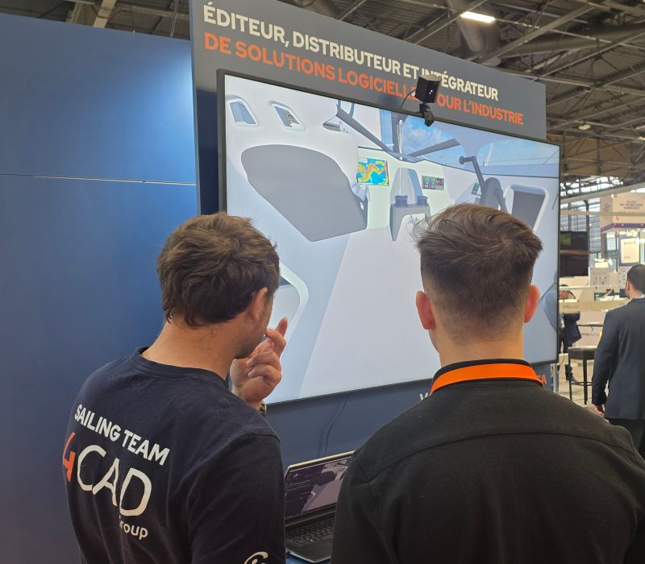
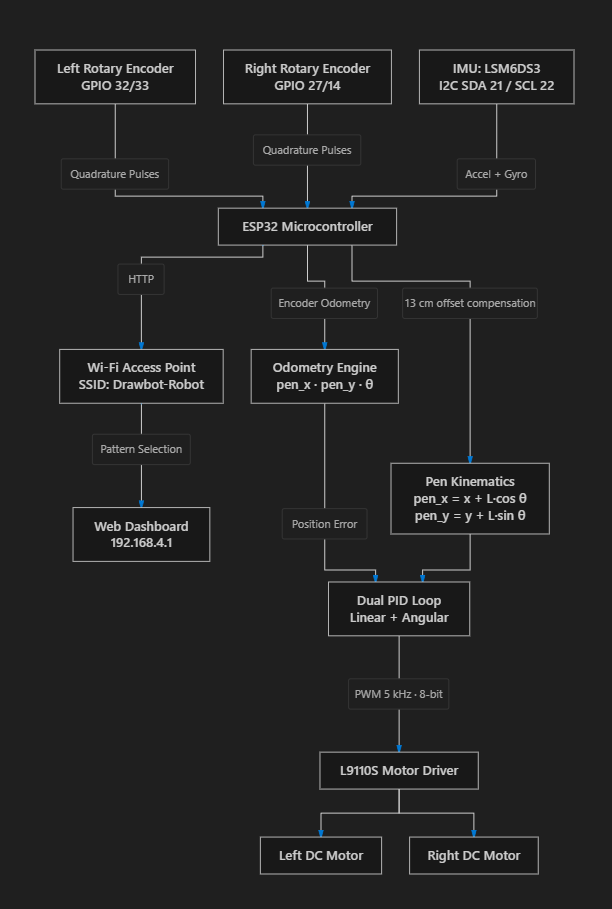
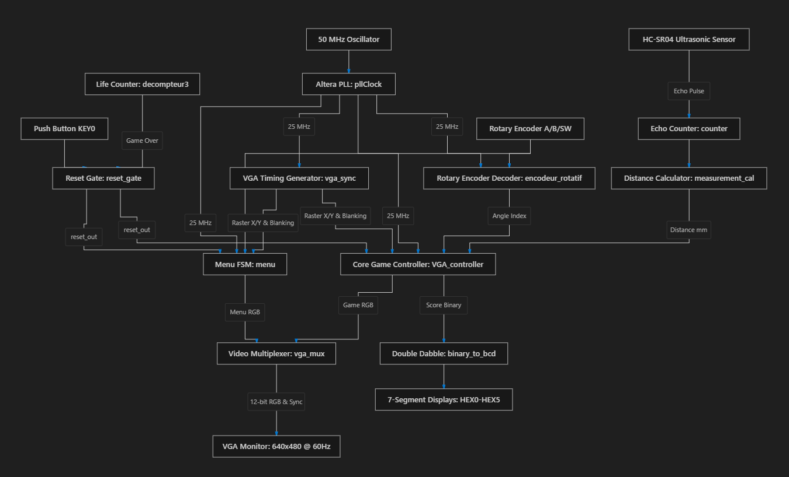

Mathias Vernier
Embedded Systems Engineer · ING4 (M1)
Engineering student in ING4 (4th Year / Master 1) at ECE Paris — designing digital hardware, control systems, and low-level firmware: from FPGA pure-logic game engines to autonomous kinematic robots.
Technical Competencies
HARDWARE & EMBEDDEDProjects
Selected Work
Hardware architectures, control systems, and interactive digital engineering.

IMOCA Cockpit VR Experience
Two-mission internship for 4CAD Group, sponsor of IMOCA skipper Benjamin Dutreux (Vendée Globe 2028). Developed VR tooling to support cockpit design — then deployed a live interactive demo at Global Industrie 2026.
Mission 1 — Design Validation Tool
- Developed a real-time VR solution to visualize and review the IMOCA yacht cockpit during the design phase — before physical manufacturing.
- Processed native CAD structural data to build an accurate 3D interactive scene with stable 60+ FPS rendering.
Mission 2 — Interactive Trade Show Demonstrator
- Built a headset-free cockpit walkthrough: visitors explore the yacht interior in VR controlled by a motion sensor tracking their physical movements.
- Deployed and operated live at Global Industrie 2026 to showcase 4CAD's sponsorship of skipper Benjamin Dutreux for the Vendée Globe.

Hardware ArchitectureDrawbot — Autonomous Plotter
End-to-end hardware and software design of a differential-drive robot that draws complex geometric shapes (rosettes, circles) through closed-loop PID control and custom pen-offset kinematics.
- Implemented a dual PID control loop (linear + angular) using hardware encoder interrupts for precise trajectory tracking.
- Pen-offset kinematics: derived and solved differential kinematic equations to compensate for a 13 cm physical offset between robot center and pen.
- Embedded an asynchronous Wi-Fi web server (ESP32 AP mode) for real-time remote control via any browser.
- Debugged motor driver PWM and hardware timers using logic analyzer and oscilloscope.

Hardware ArchitectureFruit Ninja on FPGA
A complete, fully hardware-accelerated Fruit Ninja arcade game implemented in pure RTL VHDL — no processor, no OS, zero software overhead. Physics, collision detection, menus and VGA generation all run on dedicated synchronous hardware pipelines at 25 MHz.
- Designed a custom VGA controller (640×480 @ 60 Hz, 12-bit RGB via resistor DAC) with on-the-fly sprite address generation.
- Contactless blade control: HC-SR04 ultrasonic sensor tracks hand height (20–400 mm) filtered by an IIR low-pass; KY-040 encoder controls blade angle (±55°).
- Hardware simulation of parabolic projectile physics for up to 13 concurrent fruit and bomb sprites.
- Fixed-point tangent lookup table for real-time angular slicing collision detection — no floating-point units or dividers.
- Full graphical menu FSM: 3 game modes (Classic, Zen, Arcade) and 3 speed presets, navigable via rotary encoder.
Background
About Me
I'm an ING4 (Master 1) student in Embedded Systems at ECE Paris, focused on bridging digital logic hardware and software — from pure RTL VHDL engines to closed-loop motor control kinematics.
My background includes industrial engineering at 4CAD Group (Vendée Globe 2028 campaign) creating real-time VR simulations, as well as academic projects in FPGA architectures, robotics, and embedded systems.
Actively seeking a 5-month engineering internship starting April 2027 to contribute to cutting-edge embedded hardware, low-level firmware, or autonomous systems.
Engineering Intern
4CAD Group · Vendée Globe 2028
Built a real-time 3D Digital Twin and VR experience for cockpit ergonomics validation of an IMOCA racing yacht.
Engineering Intern
Groupe SYD · Automated Workflows
Architected automated data workflows and improved UI interfaces for cross-team software adoption.
M.Sc. in Engineering
ECE Paris · Major: Embedded Systems
Real-Time OS · Computer Architecture · Signal Processing · Hardware AI · Control Theory